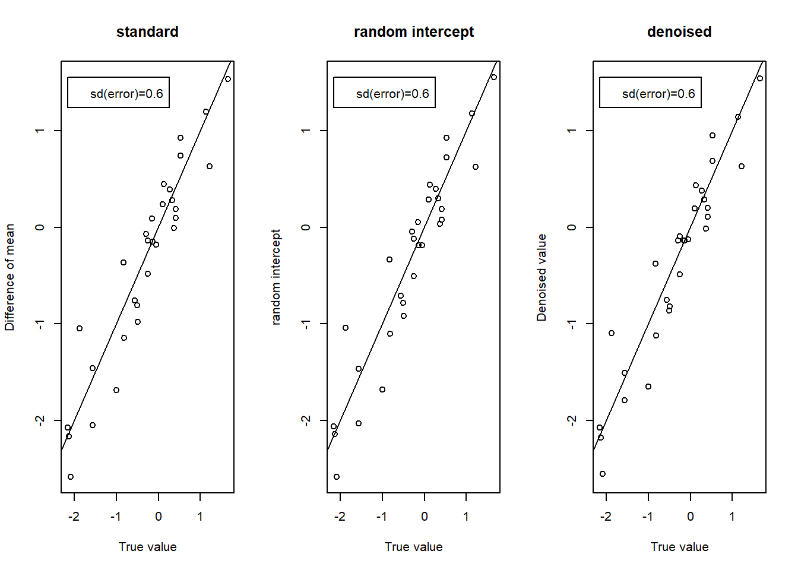
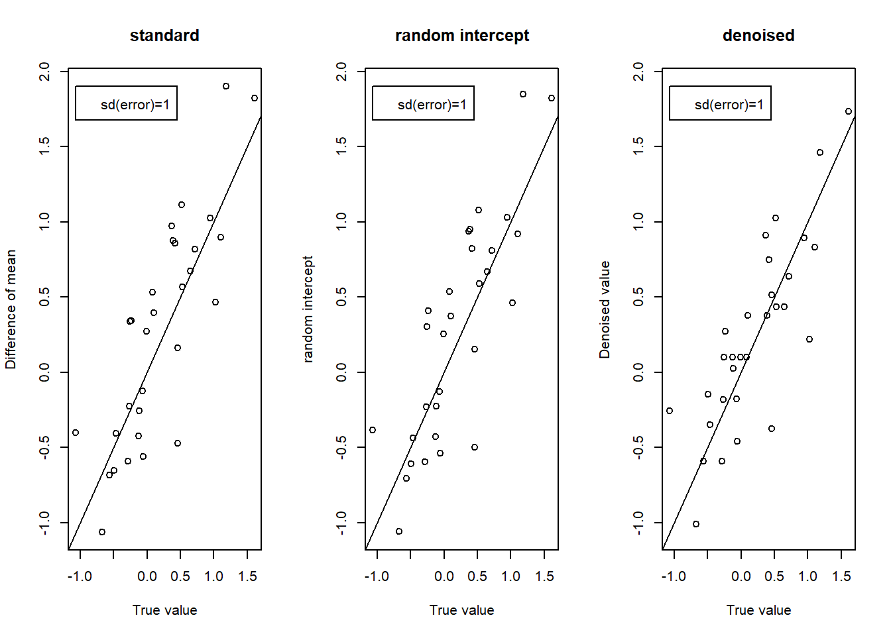
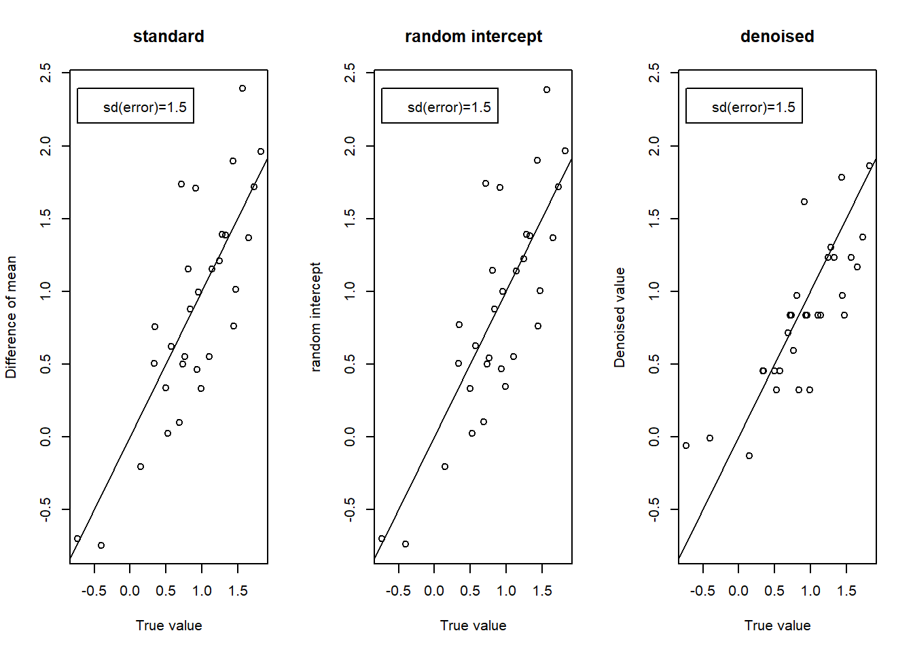
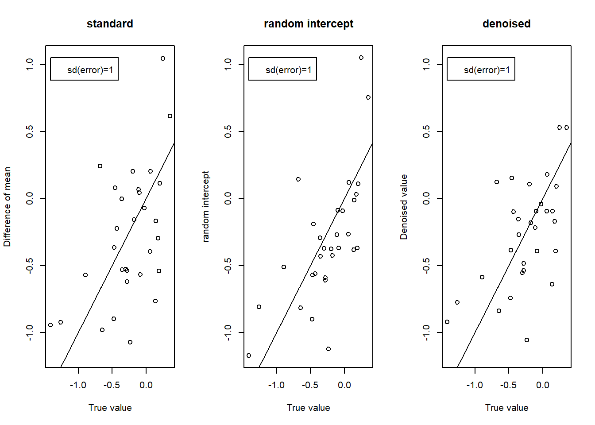
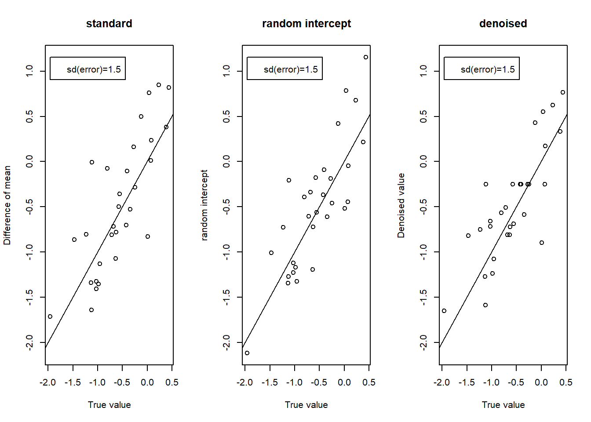
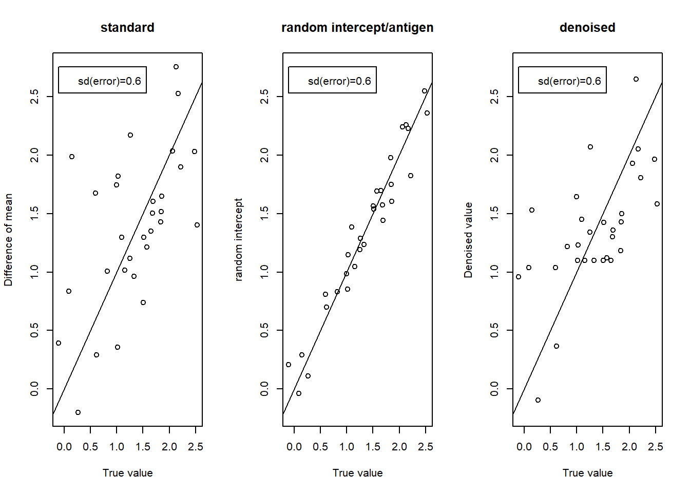

Simulatioon Studies of decomposition model: 5 antigens with 6 antibodies
Jie Zhou
2024-12-13
Last updated: 2024-12-13
Checks: 6 1
Knit directory: danovir_data_analysis/
This reproducible R Markdown analysis was created with workflowr (version 1.7.1). The Checks tab describes the reproducibility checks that were applied when the results were created. The Past versions tab lists the development history.
The R Markdown file has unstaged changes. To know which version of
the R Markdown file created these results, you’ll want to first commit
it to the Git repo. If you’re still working on the analysis, you can
ignore this warning. When you’re finished, you can run
wflow_publish to commit the R Markdown file and build the
HTML.
Great job! The global environment was empty. Objects defined in the global environment can affect the analysis in your R Markdown file in unknown ways. For reproduciblity it’s best to always run the code in an empty environment.
The command set.seed(20241027) was run prior to running
the code in the R Markdown file. Setting a seed ensures that any results
that rely on randomness, e.g. subsampling or permutations, are
reproducible.
Great job! Recording the operating system, R version, and package versions is critical for reproducibility.
Nice! There were no cached chunks for this analysis, so you can be confident that you successfully produced the results during this run.
Great job! Using relative paths to the files within your workflowr project makes it easier to run your code on other machines.
Great! You are using Git for version control. Tracking code development and connecting the code version to the results is critical for reproducibility.
The results in this page were generated with repository version ea1ffdd. See the Past versions tab to see a history of the changes made to the R Markdown and HTML files.
Note that you need to be careful to ensure that all relevant files for
the analysis have been committed to Git prior to generating the results
(you can use wflow_publish or
wflow_git_commit). workflowr only checks the R Markdown
file, but you know if there are other scripts or data files that it
depends on. Below is the status of the Git repository when the results
were generated:
Ignored files:
Ignored: .Rhistory
Ignored: .Rproj.user/
Unstaged changes:
Modified: analysis/simulation.Rmd
Note that any generated files, e.g. HTML, png, CSS, etc., are not included in this status report because it is ok for generated content to have uncommitted changes.
These are the previous versions of the repository in which changes were
made to the R Markdown (analysis/simulation.Rmd) and HTML
(docs/simulation.html) files. If you’ve configured a remote
Git repository (see ?wflow_git_remote), click on the
hyperlinks in the table below to view the files as they were in that
past version.
| File | Version | Author | Date | Message |
|---|---|---|---|---|
| Rmd | ea1ffdd | Jie Zhou-2 | 2024-12-13 | simulation study |
| html | ea1ffdd | Jie Zhou-2 | 2024-12-13 | simulation study |
| Rmd | c5e55e9 | Jie Zhou-2 | 2024-12-02 | random effects vs error term |
| html | c5e55e9 | Jie Zhou-2 | 2024-12-02 | random effects vs error term |
| Rmd | 061ca84 | Jie Zhou-2 | 2024-12-01 | three methods |
| html | 061ca84 | Jie Zhou-2 | 2024-12-01 | three methods |
Model:
\[infant_{ijkl}=\mu + \alpha_j + \beta_k + \lambda_l+\gamma_{1lj}+\gamma_{2lk}+ \gamma_{3jk}+\gamma_{jkl}+ e_{ijk}, e_{ijk}\sim N(0,\sigma_{jk})\]
1. data are from full model with independent repeated measurements
[1] "MSE for testing data: "
standard random intercept dnoised
0.420 0.419 0.419
[1] "MSE for treatment effect estimates: "
standard random intercept dnoised
0.119 0.116 0.100
[1] "MSE for coefficient estimates: "
standard random intercept dnoised
0.394 0.355 0.153 
[1] "MSE for testing data: "
standard random intercept dnoised
1.090 1.089 1.111
[1] "MSE for treatment effect estimates: "
standard random intercept dnoised
0.173 0.171 0.132
[1] "MSE for coefficient estimates: "
standard random intercept dnoised
0.325 0.323 0.330 
[1] "MSE for testing data: "
standard random intercept dnoised
2.344 2.345 2.336
[1] "MSE for treatment effect estimates: "
standard random intercept dnoised
0.187 0.187 0.116
[1] "MSE for coefficient estimates: "
standard random intercept dnoised
1.225 1.215 0.359 
2. data are from full model with random intercepts
[1] "MSE for testing data: "
standard random intercept dnoised
1.360 1.392 1.382
[1] "MSE for treatment effect estimates: "
standard random intercept dnoised
0.183 0.039 0.115
[1] "MSE for coefficient estimates: "
standard random intercept dnoised
0.416 0.085 0.114
[1] "MSE for testing data: "
standard random intercept dnoised
1.853 1.846 1.855
[1] "MSE for treatment effect estimates: "
standard random intercept dnoised
0.202 0.139 0.139
[1] "MSE for coefficient estimates: "
standard random intercept dnoised
0.218 0.156 0.133 
[1] "MSE for testing data: "
standard random intercept dnoised
2.899 2.915 2.939
[1] "MSE for treatment effect estimates: "
standard random intercept dnoised
0.196 0.159 0.140
[1] "MSE for coefficient estimates: "
standard random intercept dnoised
0.338 0.227 0.289 
3. data are from full model with random intercept and antigen effects
[1] "MSE for testing data: "
standard random intercept/antigen dnoised
5.697 5.841 5.770
[1] "MSE for treatment effect estimates: "
standard random intercept/antigen dnoised
0.391 0.026 0.304
[1] "MSE for coefficient estimates: "
standard random intercept/antigen dnoised
0.428 0.044 0.204 
[1] "MSE for testing data: "
standard random intercept/antigen dnoised
4.941 4.997 4.942
[1] "MSE for treatment effect estimates: "
standard random intercept/antigen dnoised
0.590 0.079 0.373
[1] "MSE for coefficient estimates: "
standard random intercept/antigen dnoised
0.819 0.131 0.296 
[1] "MSE for testing data: "
standard random intercept/antigen dnoised
6.189 6.313 6.260
[1] "MSE for treatment effect estimates: "
standard random intercept/antigen dnoised
0.832 0.274 0.427
[1] "MSE for coefficient estimates: "
standard random intercept/antigen dnoised
1.457 0.888 0.594
4. data are from full model with random intercept and antigen effects
[1] "MSE for testing data: "
standard random intercept dnoised
7.361 7.614 7.504
[1] "MSE for treatment effect estimates: "
standard random intercept dnoised
0.649 0.044 0.339
[1] "MSE for coefficient estimates: "
standard random intercept dnoised
1.077 0.113 0.416 
[1] "MSE for testing data: "
standard random intercept dnoised
5.392 5.518 5.462
[1] "MSE for treatment effect estimates: "
standard random intercept dnoised
0.677 0.142 0.428
[1] "MSE for coefficient estimates: "
standard random intercept dnoised
1.014 0.258 0.261 [1] "MSE for testing data: "
standard random intercept dnoised
10.094 10.408 10.234
[1] "MSE for treatment effect estimates: "
standard random intercept dnoised
0.686 0.172 0.311
[1] "MSE for coefficient estimates: "
standard random intercept dnoised
2.277 0.258 0.391 Forest plot
sessionInfo()R version 4.4.0 (2024-04-24 ucrt)
Platform: x86_64-w64-mingw32/x64
Running under: Windows 10 x64 (build 19045)
Matrix products: default
locale:
[1] LC_COLLATE=English_United States.utf8
[2] LC_CTYPE=English_United States.utf8
[3] LC_MONETARY=English_United States.utf8
[4] LC_NUMERIC=C
[5] LC_TIME=English_United States.utf8
time zone: America/New_York
tzcode source: internal
attached base packages:
[1] grid stats graphics grDevices utils datasets methods
[8] base
other attached packages:
[1] danovir_0.1.0 glmnet_4.1-8 Matrix_1.7-0 glmmLasso_1.6.3
[5] devtools_2.4.5 usethis_2.2.3 nlme_3.1-164 VCA_1.5.1
[9] stringr_1.5.1 mixOmics_6.28.0 lattice_0.22-6 MASS_7.3-60.2
[13] ggrepel_0.9.5 ggplot2_3.5.1 DT_0.33 DBI_1.2.2
[17] dplyr_1.1.4 forestplot_3.1.5 abind_1.4-5 checkmate_2.3.1
loaded via a namespace (and not attached):
[1] gridExtra_2.3 remotes_2.5.0 rlang_1.1.3
[4] magrittr_2.0.3 git2r_0.33.0 matrixStats_1.3.0
[7] compiler_4.4.0 vctrs_0.6.5 reshape2_1.4.4
[10] profvis_0.3.8 pkgconfig_2.0.3 shape_1.4.6.1
[13] fastmap_1.1.1 backports_1.4.1 ellipsis_0.3.2
[16] utf8_1.2.4 promises_1.3.0 rmarkdown_2.26
[19] sessioninfo_1.2.2 nloptr_2.0.3 purrr_1.0.2
[22] xfun_0.43 cachem_1.0.8 jsonlite_1.8.8
[25] highr_0.10 later_1.3.2 BiocParallel_1.38.0
[28] parallel_4.4.0 R6_2.5.1 bslib_0.7.0
[31] stringi_1.8.3 RColorBrewer_1.1-3 boot_1.3-30
[34] pkgload_1.3.4 jquerylib_0.1.4 numDeriv_2016.8-1.1
[37] Rcpp_1.0.12 iterators_1.0.14 knitr_1.46
[40] httpuv_1.6.15 splines_4.4.0 igraph_2.0.3
[43] tidyselect_1.2.1 rstudioapi_0.16.0 yaml_2.3.8
[46] codetools_0.2-20 miniUI_0.1.1.1 pkgbuild_1.4.4
[49] tibble_3.2.1 plyr_1.8.9 shiny_1.8.1.1
[52] withr_3.0.0 rARPACK_0.11-0 evaluate_0.23
[55] survival_3.5-8 desc_1.4.3 urlchecker_1.0.1
[58] pillar_1.9.0 whisker_0.4.1 foreach_1.5.2
[61] ellipse_0.5.0 generics_0.1.3 rprojroot_2.0.4
[64] munsell_0.5.1 scales_1.3.0 minqa_1.2.6
[67] xtable_1.8-4 glue_1.7.0 tools_4.4.0
[70] lme4_1.1-35.3 RSpectra_0.16-1 fs_1.6.4
[73] tidyr_1.3.1 colorspace_2.1-0 cli_3.6.2
[76] workflowr_1.7.1 fansi_1.0.6 corpcor_1.6.10
[79] gtable_0.3.5 sass_0.4.9 digest_0.6.35
[82] htmlwidgets_1.6.4 memoise_2.0.1 htmltools_0.5.8.1
[85] lifecycle_1.0.4 mime_0.12